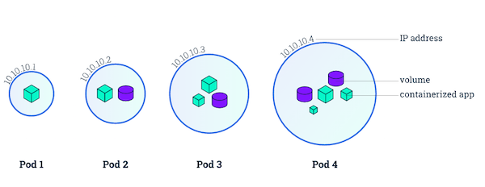

Pod
Pod 是一组紧密关联的容器集合，它们共享 IPC 和 Network namespace，是 Kubernetes 调度的基本单位。Pod 的设计理念是支持多个容器在一个 Pod 中共享网络和文件系统，可以通过进程间通信和文件共享这种简单高效的方式组合完成服务。

Pod 的特征
- 包含多个共享 IPC 和 Network namespace 的容器，可直接通过 localhost 通信
- 所有 Pod 内容器都可以访问共享的 Volume，可以访问共享数据
- 无容错性：直接创建的 Pod 一旦被调度后就跟 Node 绑定，即使 Node 挂掉也不会被重新调度（而是被自动删除），因此推荐使用 Deployment、Daemonset 等控制器来容错
- 优雅终止：Pod 删除的时候先给其内的进程发送 SIGTERM，等待一段时间（grace period）后才强制停止依然还在运行的进程
- 特权容器（通过 SecurityContext 配置）具有改变系统配置的权限（在网络插件中大量应用）
Kubernetes v1.8+ 支持容器间共享 PID namespace，需要 docker >= 1.13.1，并配置 kubelet
--docker-disable-shared-pid=false。在 Kubernetes v1.10+
--docker-disable-shared-pid已被弃用，如果要共享 PID namespace，需要设置 v1.PodSpec 中的 ShareProcessNamespace 为 true，如下所示spec: shareProcessNamespace: true
API 版本对照表
| Kubernetes 版本 | Core API 版本 | 默认开启 |
|---|---|---|
| v1.5+ | core/v1 | 是 |
Pod 定义
通过 yaml 或 json 描述 Pod 和其内容器的运行环境以及期望状态，比如一个最简单的 nginx pod 可以定义为
apiVersion: v1
kind: Pod
metadata:
name: nginx
labels:
app: nginx
spec:
containers:
- name: nginx
image: nginx
ports:
- containerPort: 80
在生产环境中，推荐使用 Deployment、StatefulSet、Job 或者 CronJob 等控制器来创建 Pod，而不推荐直接创建 Pod。
Docker 镜像支持
目前，Kubernetes 仅支持使用 Docker 镜像来创建容器，但并非支持 Dockerfile 定义的所有行为。如下表所示
| Dockerfile 指令 | 描述 | 支持 | 说明 |
|---|---|---|---|
| ENTRYPOINT | 启动命令 | 是 | containerSpec.command |
| CMD | 命令的参数列表 | 是 | containerSpec.args |
| ENV | 环境变量 | 是 | containerSpec.env |
| EXPOSE | 对外开放的端口 | 否 | 使用 containerSpec.ports.containerPort 替代 |
| VOLUME | 数据卷 | 是 | 使用 volumes 和 volumeMounts |
| USER | 进程运行用户以及用户组 | 是 | securityContext.runAsUser/supplementalGroups |
| WORKDIR | 工作目录 | 是 | containerSpec.workingDir |
| STOPSIGNAL | 停止容器时给进程发送的信号 | 是 | SIGKILL |
| HEALTHCHECK | 健康检查 | 否 | 使用 livenessProbe 和 readinessProbe 替代 |
| SHELL | 运行启动命令的 SHELL | 否 | 使用镜像默认 SHELL 启动命令 |
Pod 生命周期
Kubernetes 以 PodStatus.Phase 抽象 Pod 的状态（但并不直接反映所有容器的状态）。可能的 Phase 包括
- Pending: API Server已经创建该Pod，但一个或多个容器还没有被创建，包括通过网络下载镜像的过程。
- Running: Pod中的所有容器都已经被创建且已经调度到 Node 上面，但至少有一个容器还在运行或者正在启动。
- Succeeded: Pod 调度到 Node 上面后均成功运行结束，并且不会重启。
- Failed: Pod中的所有容器都被终止了，但至少有一个容器退出失败（即退出码不为 0 或者被系统终止）。
- Unknonwn: 状态未知，因为一些原因Pod无法被正常获取，通常是由于 apiserver 无法与 kubelet 通信导致。
可以用 kubectl 命令查询 Pod Phase：
$ kubectl get pod reviews-v1-5bdc544bbd-5qgxj -o jsonpath="{.status.phase}"
Running
PodSpec 中的 restartPolicy 可以用来设置是否对退出的 Pod 重启，可选项包括 Always、OnFailure、以及 Never。比如
- 单容器的 Pod，容器成功退出时，不同
restartPolicy时的动作为- Always: 重启 Container; Pod
phase保持 Running. - OnFailure: Pod
phase变成 Succeeded. - Never: Pod
phase变成 Succeeded.
- Always: 重启 Container; Pod
- 单容器的 Pod，容器失败退出时，不同
restartPolicy时的动作为- Always: 重启 Container; Pod
phase保持 Running. - OnFailure: 重启 Container; Pod
phase保持 Running. - Never: Pod
phase变成 Failed.
- Always: 重启 Container; Pod
- 2个容器的 Pod，其中一个容器在运行而另一个失败退出时，不同
restartPolicy时的动作为- Always: 重启 Container; Pod
phase保持 Running. - OnFailure: 重启 Container; Pod
phase保持 Running. - Never: 不重启 Container; Pod
phase保持 Running.
- Always: 重启 Container; Pod
- 2个容器的 Pod，其中一个容器停止而另一个失败退出时，不同
restartPolicy时的动作为- Always: 重启 Container; Pod
phase保持 Running. - OnFailure: 重启 Container; Pod
phase保持 Running. - Never: Pod
phase变成 Failed.
- Always: 重启 Container; Pod
- 单容器的 Pod，容器内存不足（OOM），不同
restartPolicy时的动作为- Always: 重启 Container; Pod
phase保持 Running. - OnFailure: 重启 Container; Pod
phase保持 Running. - Never: 记录失败事件; Pod
phase变成 Failed.
- Always: 重启 Container; Pod
- Pod 还在运行，但磁盘不可访问时
- 终止所有容器
- Pod
phase变成 Failed - 如果 Pod 是由某个控制器管理的，则重新创建一个 Pod 并调度到其他 Node 运行
- Pod 还在运行，但由于网络分区故障导致 Node 无法访问
- Node controller等待 Node 事件超时
- Node controller 将 Pod
phase设置为 Failed. - 如果 Pod 是由某个控制器管理的，则重新创建一个 Pod 并调度到其他 Node 运行
使用 Volume
Volume 可以为容器提供持久化存储，比如
apiVersion: v1
kind: Pod
metadata:
name: redis
spec:
containers:
- name: redis
image: redis
volumeMounts:
- name: redis-storage
mountPath: /data/redis
volumes:
- name: redis-storage
emptyDir: {}
更多挂载存储卷的方法参考 Volume。
私有镜像
在使用私有镜像时，需要创建一个 docker registry secret，并在容器中引用。
创建 docker registry secret：
kubectl create secret docker-registry regsecret --docker-server=<your-registry-server> --docker-username=<your-name> --docker-password=<your-pword> --docker-email=<your-email>
比如使用 Azure Container Registry（ACR）：
ACR_NAME=dregistry
SERVICE_PRINCIPAL_NAME=acr-service-principal
# Populate the ACR login server and resource id.
ACR_LOGIN_SERVER=$(az acr show --name $ACR_NAME --query loginServer --output tsv)
ACR_REGISTRY_ID=$(az acr show --name $ACR_NAME --query id --output tsv)
# Create a contributor role assignment with a scope of the ACR resource.
SP_PASSWD=$(az ad sp create-for-rbac --name $SERVICE_PRINCIPAL_NAME --role Reader --scopes $ACR_REGISTRY_ID --query password --output tsv)
# Get the service principle client id.
CLIENT_ID=$(az ad sp show --id http://$SERVICE_PRINCIPAL_NAME --query appId --output tsv)
# Create secret
kubectl create secret docker-registry acr-auth --docker-server $ACR_LOGIN_SERVER --docker-username $CLIENT_ID --docker-password $SP_PASSWD --docker-email local@local.domain
在引用 docker registry secret 时，有两种可选的方法：
第一种是直接在 Pod 描述文件中引用该 secret：
apiVersion: v1
kind: Pod
metadata:
name: private-reg
spec:
containers:
- name: private-reg-container
image: dregistry.azurecr.io/acr-auth-example
imagePullSecrets:
- name: acr-auth
第二种是把 secret 添加到 service account 中，再通过 service account 引用（一般是某个 namespace 的 default service account）：
$ kubectl get secrets myregistrykey
$ kubectl patch serviceaccount default -p '{"imagePullSecrets": [{"name": "myregistrykey"}]}'
$ kubectl get serviceaccounts default -o yaml
apiVersion: v1
kind: ServiceAccount
metadata:
creationTimestamp: 2015-08-07T22:02:39Z
name: default
namespace: default
selfLink: /api/v1/namespaces/default/serviceaccounts/default
uid: 052fb0f4-3d50-11e5-b066-42010af0d7b6
secrets:
- name: default-token-uudge
imagePullSecrets:
- name: myregistrykey
RestartPolicy
支持三种 RestartPolicy
- Always：当容器失效时，由Kubelet自动重启该容器。RestartPolicy的默认值。
- OnFailure：当容器终止运行且退出码不为0时由Kubelet重启。
- Never：无论何种情况下，Kubelet都不会重启该容器。
注意，这里的重启是指在 Pod 所在 Node 上面本地重启，并不会调度到其他 Node 上去。
环境变量
环境变量为容器提供了一些重要的资源，包括容器和 Pod 的基本信息以及集群中服务的信息等：
(1) hostname
HOSTNAME 环境变量保存了该 Pod 的 hostname。
（2）容器和 Pod 的基本信息
Pod 的名字、命名空间、IP 以及容器的计算资源限制等可以以 Downward API 的方式获取并存储到环境变量中。
apiVersion: v1
kind: Pod
metadata:
name: test
spec:
containers:
- name: test-container
image: gcr.io/google_containers/busybox
command: ["sh", "-c"]
args:
- env
resources:
requests:
memory: "32Mi"
cpu: "125m"
limits:
memory: "64Mi"
cpu: "250m"
env:
- name: MY_NODE_NAME
valueFrom:
fieldRef:
fieldPath: spec.nodeName
- name: MY_POD_NAME
valueFrom:
fieldRef:
fieldPath: metadata.name
- name: MY_POD_NAMESPACE
valueFrom:
fieldRef:
fieldPath: metadata.namespace
- name: MY_POD_IP
valueFrom:
fieldRef:
fieldPath: status.podIP
- name: MY_POD_SERVICE_ACCOUNT
valueFrom:
fieldRef:
fieldPath: spec.serviceAccountName
- name: MY_CPU_REQUEST
valueFrom:
resourceFieldRef:
containerName: test-container
resource: requests.cpu
- name: MY_CPU_LIMIT
valueFrom:
resourceFieldRef:
containerName: test-container
resource: limits.cpu
- name: MY_MEM_REQUEST
valueFrom:
resourceFieldRef:
containerName: test-container
resource: requests.memory
- name: MY_MEM_LIMIT
valueFrom:
resourceFieldRef:
containerName: test-container
resource: limits.memory
restartPolicy: Never
(3) 集群中服务的信息
容器的环境变量中还可以引用容器运行前创建的所有服务的信息，比如默认的 kubernetes 服务对应以下环境变量：
KUBERNETES_PORT_443_TCP_ADDR=10.0.0.1
KUBERNETES_SERVICE_HOST=10.0.0.1
KUBERNETES_SERVICE_PORT=443
KUBERNETES_SERVICE_PORT_HTTPS=443
KUBERNETES_PORT=tcp://10.0.0.1:443
KUBERNETES_PORT_443_TCP=tcp://10.0.0.1:443
KUBERNETES_PORT_443_TCP_PROTO=tcp
KUBERNETES_PORT_443_TCP_PORT=443
由于环境变量存在创建顺序的局限性（环境变量中不包含后来创建的服务），推荐使用 DNS 来解析服务。
镜像拉取策略
支持三种 ImagePullPolicy
- Always：不管本地镜像是否存在都会去仓库进行一次镜像拉取。校验如果镜像有变化则会覆盖本地镜像，否则不会覆盖。
- Never：只是用本地镜像，不会去仓库拉取镜像，如果本地镜像不存在则Pod运行失败。
- IfNotPresent：只有本地镜像不存在时，才会去仓库拉取镜像。ImagePullPolicy的默认值。
注意：
- 默认为
IfNotPresent，但:latest标签的镜像默认为Always。 - 拉取镜像时 docker 会进行校验，如果镜像中的 MD5 码没有变，则不会拉取镜像数据。
- 生产环境中应该尽量避免使用
:latest标签，而开发环境中可以借助:latest标签自动拉取最新的镜像。
访问 DNS 的策略
通过设置 dnsPolicy 参数，设置 Pod 中容器访问 DNS 的策略
- ClusterFirst：优先基于 cluster domain （如
default.svc.cluster.local） 后缀，通过 kube-dns 查询 (默认策略) - Default：优先从 Node 中配置的 DNS 查询
使用主机的 IPC 命名空间
通过设置 spec.hostIPC 参数为 true，使用主机的 IPC 命名空间，默认为 false。
使用主机的网络命名空间
通过设置 spec.hostNetwork 参数为 true，使用主机的网络命名空间，默认为 false。
使用主机的 PID 空间
通过设置 spec.hostPID 参数为 true，使用主机的 PID 命名空间，默认为 false。
apiVersion: v1
kind: Pod
metadata:
name: busybox1
labels:
name: busybox
spec:
hostIPC: true
hostPID: true
hostNetwork: true
containers:
- image: busybox
command:
- sleep
- "3600"
name: busybox
设置 Pod 的 hostname
通过 spec.hostname 参数实现，如果未设置默认使用 metadata.name 参数的值作为 Pod 的 hostname。
设置 Pod 的子域名
通过 spec.subdomain 参数设置 Pod 的子域名，默认为空。
比如，指定 hostname 为 busybox-2 和 subdomain 为 default-subdomain，完整域名为 busybox-2.default-subdomain.default.svc.cluster.local，也可以简写为 busybox-2.default-subdomain.default：
apiVersion: v1
kind: Pod
metadata:
name: busybox2
labels:
name: busybox
spec:
hostname: busybox-2
subdomain: default-subdomain
containers:
- image: busybox
command:
- sleep
- "3600"
name: busybox
注意：
- 默认情况下，DNS 为 Pod 生成的 A 记录格式为
pod-ip-address.my-namespace.pod.cluster.local，如1-2-3-4.default.pod.cluster.local - 上面的示例还需要在 default namespace 中创建一个名为
default-subdomain（即 subdomain）的 headless service，否则其他 Pod 无法通过完整域名访问到该 Pod（只能自己访问到自己）
kind: Service
apiVersion: v1
metadata:
name: default-subdomain
spec:
clusterIP: None
selector:
name: busybox
ports:
- name: foo # Actually, no port is needed.
port: 1234
targetPort: 1234
注意，必须为 headless service 设置至少一个服务端口（spec.ports，即便它看起来并不需要），否则 Pod 与 Pod 之间依然无法通过完整域名来访问。
设置 Pod 的 DNS 选项
从 v1.9 开始，可以在 kubelet 和 kube-apiserver 中设置 --feature-gates=CustomPodDNS=true 开启设置每个 Pod DNS 地址的功能。
注意该功能在 v1.10 中为 Beta 版，v1.9 中为 Alpha 版。
apiVersion: v1
kind: Pod
metadata:
namespace: default
name: dns-example
spec:
containers:
- name: test
image: nginx
dnsPolicy: "None"
dnsConfig:
nameservers:
- 1.2.3.4
searches:
- ns1.svc.cluster.local
- my.dns.search.suffix
options:
- name: ndots
value: "2"
- name: edns0
对于旧版本的集群，可以使用 ConfigMap 来自定义 Pod 的 /etc/resolv.conf，如
kind: ConfigMap
apiVersion: v1
metadata:
name: resolvconf
namespace: default
data:
resolv.conf: |
search default.svc.cluster.local svc.cluster.local cluster.local
nameserver 10.0.0.10
---
kind: Deployment
apiVersion: extensions/v1beta1
metadata:
name: dns-test
namespace: default
spec:
replicas: 1
template:
metadata:
labels:
name: dns-test
spec:
containers:
- name: dns-test
image: alpine
stdin: true
tty: true
command: ["sh"]
volumeMounts:
- name: resolv-conf
mountPath: /etc/resolv.conf
subPath: resolv.conf
volumes:
- name: resolv-conf
configMap:
name: resolvconf
items:
- key: resolv.conf
path: resolv.conf
资源限制
Kubernetes 通过 cgroups 限制容器的 CPU 和内存等计算资源，包括 requests（请求，调度器保证调度到资源充足的 Node 上，如果无法满足会调度失败）和 limits（上限）等：
spec.containers[].resources.limits.cpu：CPU 上限，可以短暂超过，容器也不会被停止spec.containers[].resources.limits.memory：内存上限，不可以超过；如果超过，容器可能会被终止或调度到其他资源充足的机器上spec.containers[].resources.limits.ephemeral-storage：临时存储（容器可写层、日志以及 EmptyDir 等）的上限，超过后 Pod 会被驱逐spec.containers[].resources.requests.cpu：CPU 请求，也是调度 CPU 资源的依据，可以超过spec.containers[].resources.requests.memory：内存请求，也是调度内存资源的依据，可以超过；但如果超过，容器可能会在 Node 内存不足时清理spec.containers[].resources.requests.ephemeral-storage：临时存储（容器可写层、日志以及 EmptyDir 等）的请求，调度容器存储的依据
比如 nginx 容器请求 30% 的 CPU 和 56MB 的内存，但限制最多只用 50% 的 CPU 和 128MB 的内存：
apiVersion: v1
kind: Pod
metadata:
labels:
app: nginx
name: nginx
spec:
containers:
- image: nginx
name: nginx
resources:
requests:
cpu: "300m"
memory: "56Mi"
limits:
cpu: "500m"
memory: "128Mi"
注意
- CPU 的单位是 CPU 个数，可以用
millicpu (m)表示少于 1 个 CPU 的情况，如500m = 500millicpu = 0.5cpu，而一个 CPU 相当于- AWS 上的一个 vCPU
- GCP 上的一个 Core
- Azure 上的一个 vCore
- 物理机上开启超线程时的一个超线程
- 内存的单位则包括
E, P, T, G, M, K, Ei, Pi, Ti, Gi, Mi, Ki等。 - 从 v1.10 开始，可以设置
kubelet ----cpu-manager-policy=static为 Guaranteed（即 requests.cpu 与 limits.cpu 相等）Pod 绑定 CPU（通过 cpuset cgroups）。
健康检查
为了确保容器在部署后确实处在正常运行状态，Kubernetes 提供了两种探针（Probe）来探测容器的状态：
- LivenessProbe：探测应用是否处于健康状态，如果不健康则删除并重新创建容器。
- ReadinessProbe：探测应用是否启动完成并且处于正常服务状态，如果不正常则不会接收来自 Kubernetes Service 的流量，即将该Pod从Service的endpoint中移除。
Kubernetes 支持三种方式来执行探针：
- exec：在容器中执行一个命令，如果 命令退出码 返回
0则表示探测成功，否则表示失败 - tcpSocket：对指定的容器 IP 及端口执行一个 TCP 检查，如果端口是开放的则表示探测成功，否则表示失败
- httpGet：对指定的容器 IP、端口及路径执行一个 HTTP Get 请求，如果返回的 状态码 在
[200,400)之间则表示探测成功，否则表示失败
apiVersion: v1
kind: Pod
metadata:
labels:
app: nginx
name: nginx
spec:
containers:
- image: nginx
imagePullPolicy: Always
name: http
livenessProbe:
httpGet:
path: /
port: 80
httpHeaders:
- name: X-Custom-Header
value: Awesome
initialDelaySeconds: 15
timeoutSeconds: 1
readinessProbe:
exec:
command:
- cat
- /usr/share/nginx/html/index.html
initialDelaySeconds: 5
timeoutSeconds: 1
- name: goproxy
image: gcr.io/google_containers/goproxy:0.1
ports:
- containerPort: 8080
readinessProbe:
tcpSocket:
port: 8080
initialDelaySeconds: 5
periodSeconds: 10
livenessProbe:
tcpSocket:
port: 8080
initialDelaySeconds: 15
periodSeconds: 20
Init Container
Pod 能够具有多个容器，应用运行在容器里面，但是它也可能有一个或多个先于应用容器启动的 Init 容器。Init 容器在所有容器运行之前执行（run-to-completion），常用来初始化配置。
如果为一个 Pod 指定了多个 Init 容器，那些容器会按顺序一次运行一个。 每个 Init 容器必须运行成功，下一个才能够运行。 当所有的 Init 容器运行完成时，Kubernetes 初始化 Pod 并像平常一样运行应用容器。
下面是一个 Init 容器的示例：
apiVersion: v1
kind: Pod
metadata:
name: init-demo
spec:
containers:
- name: nginx
image: nginx
ports:
- containerPort: 80
volumeMounts:
- name: workdir
mountPath: /usr/share/nginx/html
# These containers are run during pod initialization
initContainers:
- name: install
image: busybox
command:
- wget
- "-O"
- "/work-dir/index.html"
- http://kubernetes.io
volumeMounts:
- name: workdir
mountPath: "/work-dir"
dnsPolicy: Default
volumes:
- name: workdir
emptyDir: {}
因为 Init 容器具有与应用容器分离的单独镜像，使用 init 容器启动相关代码具有如下优势：
- 它们可以包含并运行实用工具，出于安全考虑，是不建议在应用容器镜像中包含这些实用工具的。
- 它们可以包含使用工具和定制化代码来安装，但是不能出现在应用镜像中。例如，创建镜像没必要 FROM 另一个镜像，只需要在安装过程中使用类似 sed、 awk、 python 或 dig 这样的工具。
- 应用镜像可以分离出创建和部署的角色，而没有必要联合它们构建一个单独的镜像。
- 它们使用 Linux Namespace，所以对应用容器具有不同的文件系统视图。因此，它们能够具有访问 Secret 的权限，而应用容器不能够访问。
- 它们在应用容器启动之前运行完成，然而应用容器并行运行，所以 Init 容器提供了一种简单的方式来阻塞或延迟应用容器的启动，直到满足了一组先决条件。
Init 容器的资源计算，选择一下两者的较大值：
- 所有 Init 容器中的资源使用的最大值
- Pod 中所有容器资源使用的总和
Init 容器的重启策略：
- 如果 Init 容器执行失败，Pod 设置的 restartPolicy 为 Never，则 pod 将处于 fail 状态。否则 Pod 将一直重新执行每一个 Init 容器直到所有的 Init 容器都成功。
- 如果 Pod 异常退出，重新拉取 Pod 后，Init 容器也会被重新执行。所以在 Init 容器中执行的任务，需要保证是幂等的。
容器生命周期钩子
容器生命周期钩子（Container Lifecycle Hooks）监听容器生命周期的特定事件，并在事件发生时执行已注册的回调函数。支持两种钩子：
- postStart： 容器创建后立即执行，注意由于是异步执行，它无法保证一定在 ENTRYPOINT 之前运行。如果失败，容器会被杀死，并根据 RestartPolicy 决定是否重启
- preStop：容器终止前执行，常用于资源清理。如果失败，容器同样也会被杀死
而钩子的回调函数支持两种方式：
- exec：在容器内执行命令，如果命令的退出状态码是
0表示执行成功，否则表示失败 - httpGet：向指定 URL 发起 GET 请求，如果返回的 HTTP 状态码在
[200, 400)之间表示请求成功，否则表示失败
postStart 和 preStop 钩子示例：
apiVersion: v1
kind: Pod
metadata:
name: lifecycle-demo
spec:
containers:
- name: lifecycle-demo-container
image: nginx
lifecycle:
postStart:
httpGet:
path: /
port: 80
preStop:
exec:
command: ["/usr/sbin/nginx","-s","quit"]
使用 Capabilities
默认情况下，容器都是以非特权容器的方式运行。比如，不能在容器中创建虚拟网卡、配置虚拟网络。
Kubernetes 提供了修改 Capabilities 的机制，可以按需要给容器增加或删除。比如下面的配置给容器增加了 CAP_NET_ADMIN 并删除了 CAP_KILL。
apiVersion: v1
kind: Pod
metadata:
name: cap-pod
spec:
containers:
- name: friendly-container
image: "alpine:3.4"
command: ["/bin/sleep", "3600"]
securityContext:
capabilities:
add:
- NET_ADMIN
drop:
- KILL
限制网络带宽
可以通过给 Pod 增加 kubernetes.io/ingress-bandwidth 和 kubernetes.io/egress-bandwidth 这两个 annotation 来限制 Pod 的网络带宽
apiVersion: v1
kind: Pod
metadata:
name: qos
annotations:
kubernetes.io/ingress-bandwidth: 3M
kubernetes.io/egress-bandwidth: 4M
spec:
containers:
- name: iperf3
image: networkstatic/iperf3
command:
- iperf3
- -s
仅 kubenet 支持限制带宽
目前只有 kubenet 网络插件支持限制网络带宽，其他 CNI 网络插件暂不支持这个功能。
kubenet 的网络带宽限制其实是通过 tc 来实现的
# setup qdisc (only once)
tc qdisc add dev cbr0 root handle 1: htb default 30
# download rate
tc class add dev cbr0 parent 1: classid 1:2 htb rate 3Mbit
tc filter add dev cbr0 protocol ip parent 1:0 prio 1 u32 match ip dst 10.1.0.3/32 flowid 1:2
# upload rate
tc class add dev cbr0 parent 1: classid 1:3 htb rate 4Mbit
tc filter add dev cbr0 protocol ip parent 1:0 prio 1 u32 match ip src 10.1.0.3/32 flowid 1:3
调度到指定的 Node 上
可以通过 nodeSelector、nodeAffinity、podAffinity 以及 Taints 和 tolerations 等来将 Pod 调度到需要的 Node 上。
也可以通过设置 nodeName 参数，将 Pod 调度到指定 node 节点上。
比如，使用 nodeSelector，首先给 Node 加上标签：
kubectl label nodes <your-node-name> disktype=ssd
接着，指定该 Pod 只想运行在带有 disktype=ssd 标签的 Node 上：
apiVersion: v1
kind: Pod
metadata:
name: nginx
labels:
env: test
spec:
containers:
- name: nginx
image: nginx
imagePullPolicy: IfNotPresent
nodeSelector:
disktype: ssd
nodeAffinity、podAffinity 以及 Taints 和 tolerations 等的使用方法请参考 调度器章节。
自定义 hosts
默认情况下，容器的 /etc/hosts 是 kubelet 自动生成的，并且仅包含 localhost 和 podName 等。不建议在容器内直接修改 /etc/hosts 文件，因为在 Pod 启动或重启时会被覆盖。
默认的 /etc/hosts 文件格式如下，其中 nginx-4217019353-fb2c5 是 podName：
$ kubectl exec nginx-4217019353-fb2c5 -- cat /etc/hosts
# Kubernetes-managed hosts file.
127.0.0.1 localhost
::1 localhost ip6-localhost ip6-loopback
fe00::0 ip6-localnet
fe00::0 ip6-mcastprefix
fe00::1 ip6-allnodes
fe00::2 ip6-allrouters
10.244.1.4 nginx-4217019353-fb2c5
从 v1.7 开始，可以通过 pod.Spec.HostAliases 来增加 hosts 内容，如
apiVersion: v1
kind: Pod
metadata:
name: hostaliases-pod
spec:
hostAliases:
- ip: "127.0.0.1"
hostnames:
- "foo.local"
- "bar.local"
- ip: "10.1.2.3"
hostnames:
- "foo.remote"
- "bar.remote"
containers:
- name: cat-hosts
image: busybox
command:
- cat
args:
- "/etc/hosts"
$ kubectl logs hostaliases-pod
# Kubernetes-managed hosts file.
127.0.0.1 localhost
::1 localhost ip6-localhost ip6-loopback
fe00::0 ip6-localnet
fe00::0 ip6-mcastprefix
fe00::1 ip6-allnodes
fe00::2 ip6-allrouters
10.244.1.5 hostaliases-pod
127.0.0.1 foo.local
127.0.0.1 bar.local
10.1.2.3 foo.remote
10.1.2.3 bar.remote
HugePages
v1.8 + 支持给容器分配 HugePages，资源格式为 hugepages-<size>（如 hugepages-2Mi）。使用前要配置
- 开启
--feature-gates="HugePages=true" - 在所有 Node 上面预分配好 HugePage ，以便 Kubelet 统计所在 Node 的 HugePage 容量
使用示例
apiVersion: v1
kind: Pod
metadata:
generateName: hugepages-volume-
spec:
containers:
- image: fedora:latest
command:
- sleep
- inf
name: example
volumeMounts:
- mountPath: /hugepages
name: hugepage
resources:
limits:
hugepages-2Mi: 100Mi
volumes:
- name: hugepage
emptyDir:
medium: HugePages
注意事项
- HugePage 资源的请求和限制必须相同
- HugePage 以 Pod 级别隔离，未来可能会支持容器级的隔离
- 基于 HugePage 的 EmptyDir 存储卷最多只能使用请求的 HugePage 内存
- 使用
shmget()的SHM_HUGETLB选项时，应用必须运行在匹配proc/sys/vm/hugetlb_shm_group的用户组（supplemental group）中
优先级
从 v1.8 开始，可以为 Pod 设置一个优先级，保证高优先级的 Pod 优先调度。
优先级调度功能目前为 Beta 版，在 v1.11 版本中默认开启。对 v1.8-1.10 版本中使用前需要开启：
--feature-gates=PodPriority=true--runtime-config=scheduling.k8s.io/v1alpha1=true --admission-control=Controller-Foo,Controller-Bar,...,Priority
为 Pod 设置优先级前，先创建一个 PriorityClass，并设置优先级（数值越大优先级越高）：
apiVersion: scheduling.k8s.io/v1alpha1
kind: PriorityClass
metadata:
name: high-priority
value: 1000000
globalDefault: false
description: "This priority class should be used for XYZ service pods only."
Kubernetes 自动创建了
system-cluster-critical和system-node-critical等两个 PriorityClass，用于 Kubernetes 核心组件。
为 Pod 指定优先级
apiVersion: v1
kind: Pod
metadata:
name: nginx
labels:
env: test
spec:
containers:
- name: nginx
image: nginx
imagePullPolicy: IfNotPresent
priorityClassName: high-priority
当调度队列有多个 Pod 需要调度时，优先调度高优先级的 Pod。而当高优先级的 Pod 无法调度时，Kubernetes 会尝试先删除低优先级的 Pod 再将其调度到对应 Node 上（Preemption）。
注意：受限于 Kubernetes 的调度策略，抢占并不总是成功。
PodDisruptionBudget
PodDisruptionBudget (PDB) 用来保证一组 Pod 同时运行的数量，这些 Pod 需要使用 Deployment、ReplicationController、ReplicaSet 或者 StatefulSet 管理。
apiVersion: policy/v1
kind: PodDisruptionBudget
metadata:
name: zk-pdb
spec:
maxUnavailable: 1
selector:
matchLabels:
app: zookeeper
Sysctls
Sysctls 允许容器设置内核参数，分为安全 Sysctls 和非安全 Sysctls：
- 安全 Sysctls：即设置后不影响其他 Pod 的内核选项，只作用在容器 namespace 中，默认开启。包括以下几种
kernel.shm_rmid_forcednet.ipv4.ip_local_port_rangenet.ipv4.tcp_syncookies
- 非安全 Sysctls：即设置好有可能影响其他 Pod 和 Node 上其他服务的内核选项，默认禁止。如果使用，需要管理员在配置 kubelet 时开启，如
kubelet --experimental-allowed-unsafe-sysctls 'kernel.msg*,net.ipv4.route.min_pmtu'
v1.6-v1.10 示例：
apiVersion: v1
kind: Pod
metadata:
name: sysctl-example
annotations:
security.alpha.kubernetes.io/sysctls: kernel.shm_rmid_forced=1
security.alpha.kubernetes.io/unsafe-sysctls: net.ipv4.route.min_pmtu=1000,kernel.msgmax=1 2 3
spec:
...
从 v1.11 开始，Sysctls 升级为 Beta 版本，不再区分安全和非安全 sysctl，统一通过 podSpec.securityContext.sysctls 设置，如
apiVersion: v1
kind: Pod
metadata:
name: sysctl-example
spec:
securityContext:
sysctls:
- name: kernel.shm_rmid_forced
value: "0"
- name: net.ipv4.route.min_pmtu
value: "552"
- name: kernel.msgmax
value: "65536"
...
Pod 时区
很多容器都是配置了 UTC 时区，与国内集群的 Node 所在时区有可能不一致，可以通过 HostPath 存储插件给容器配置与 Node 一样的时区：
apiVersion: v1
kind: Pod
metadata:
name: sh
namespace: default
spec:
containers:
- image: alpine
stdin: true
tty: true
volumeMounts:
- mountPath: /etc/localtime
name: time
readOnly: true
volumes:
- hostPath:
path: /etc/localtime
type: ""
name: time